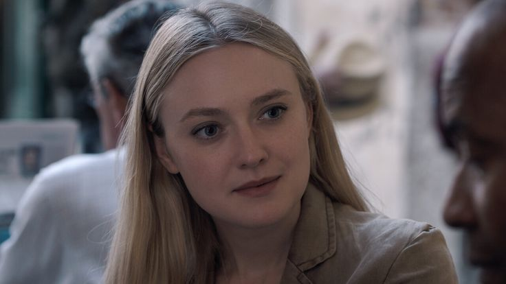
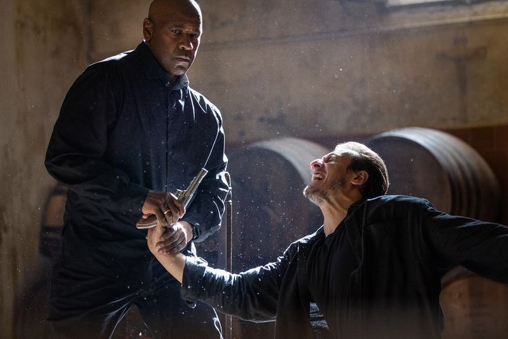
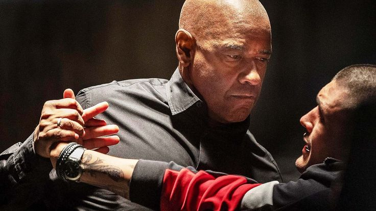
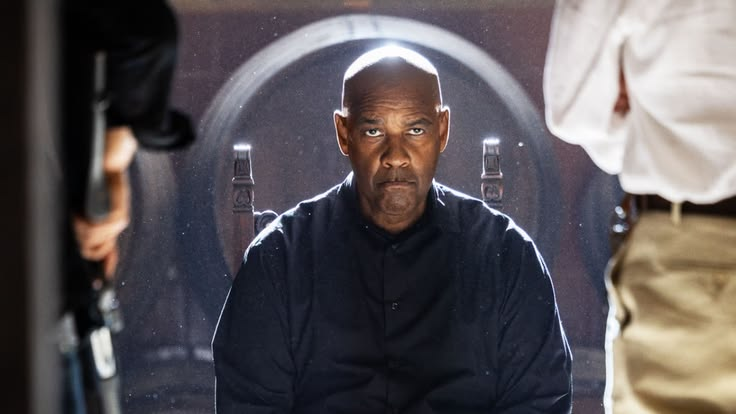
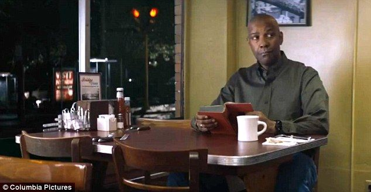

⚠ Contiene escenas de violencia, consumo de drogas, consumo de tabaco, lenguaje malsonante, Las luces parpadeantes y los patrones estroboscópicos pueden afectar a espectadores fotosensibles. ⚠





En "El Justiciero: Capítulo final", el valiente justiciero se enfrenta a su mayor desafío hasta ahora. Con una trama llena de giros inesperados, esta película te mantendrá al borde de tu asiento. No te pierdas esta emocionante conclusión de la saga.
.
El Justiciero se encuentra atrapado en una red de conspiraciones y traiciones mientras intenta desentrañar un misterio que amenaza con destruir su mundo. Con la ayuda de aliados inesperados, deberá enfrentarse a enemigos poderosos y descubrir la verdad oculta detrás de su misión.
- Denzel Washington como Robert McCall
- Dakota Fanning como Emma Collins
- Eugenio Mastrandrea como Gio Bonucci
- David Denman como Frank Conroy
- Gaia Scodellaro como Aminah
- Remo Girone como Enzo Arisio
- Andrea Scarduzio como Vincent Quaranta
- Andrea Dodero como Marco Quaranta
- "El Justiciero: Capítulo final" es la tercera entrega de la saga "El Justiciero".
- La película fue filmada en varias locaciones alrededor del mundo, incluyendo Estados Unidos, Italia y Marruecos.
- Denzel Washington, quien interpreta al Justiciero, también es productor de la película.
- La película ha sido elogiada por su acción intensa y su trama intrigante.
- El director Antoine Fuqua ha trabajado con Denzel Washington en varias ocasiones, incluyendo las dos entregas anteriores de "El Justiciero".
- La película cuenta con una banda sonora original compuesta por Harry Gregson-Williams.